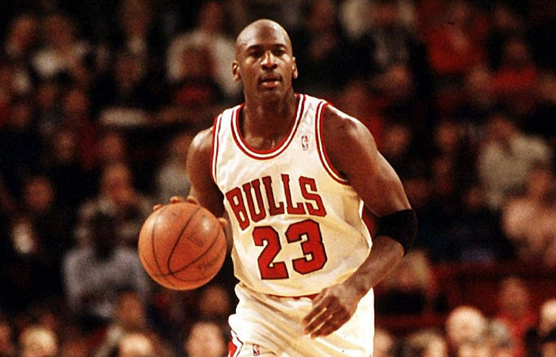
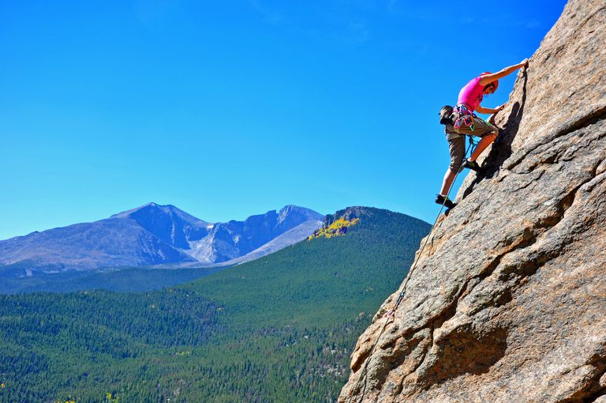
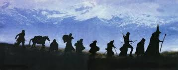
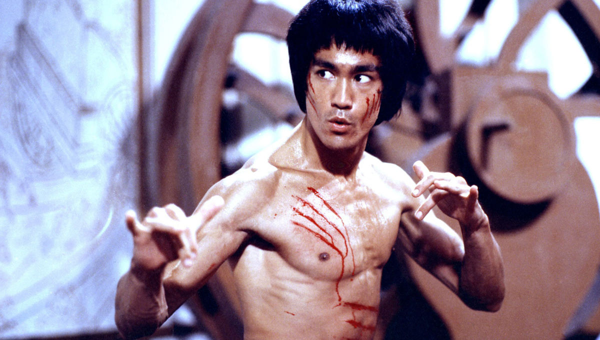
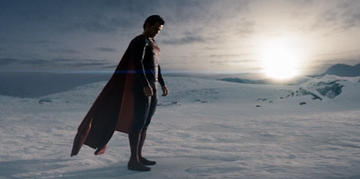
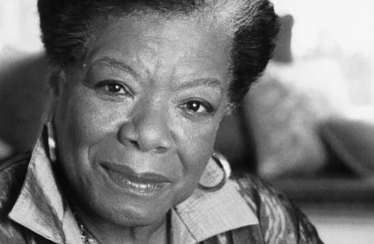
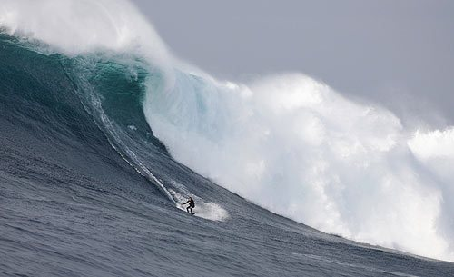
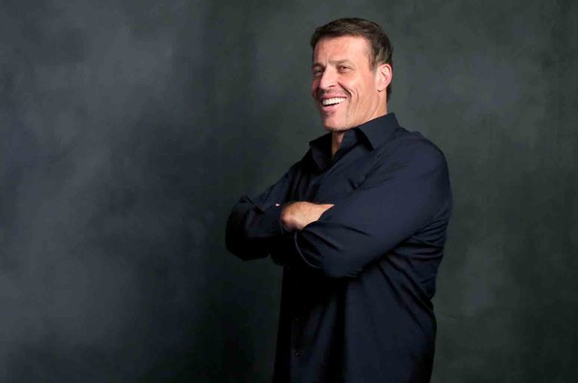
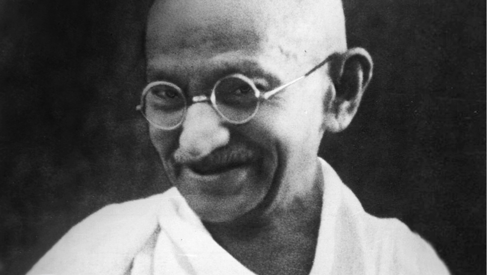

Don't aspire to make a living, aspire to make a difference.
-Denzel Washington
-Denzel Washington
I am never in control of what happens around me, but I am always in control of what happens within me.
-unknown
-unknown

Limits, like fear, is often an illusion.
-MJ
-MJ

Our greatest glory is not in never failing, but in rising up every time we fail.
-Ralph Waldo Emerson
-Ralph Waldo Emerson

Not all those who wander... are lost.
-J.R.R. Tolkien
-J.R.R. Tolkien
Be humble, be hungry, and always be the hardest worker in the room.
-Dwayne Johnson
-Dwayne Johnson

Absorb what is useful, discard what is useless and add what is specifically your own.
-Bruce Lee
-Bruce Lee
Power comes not from knowledge kept but from knowledge shared.
-Bill Gates
-Bill Gates
You want to know the difference between a master and a beginner? The master has failed more times than the beginner has ever tried.
- Master YODA
- Master YODA
You are responsible for your life. You can't keep blaming someone else for your dysfunction. Life is really about moving on.
-Oprah Winfrey
-Oprah Winfrey

Every person can be a force for good, free to forge his own destiny.
-Jor-El, Man of Steel (2013)
-Jor-El, Man of Steel (2013)

It’s one of the greatest gifts you can give yourself, to forgive. Forgive everybody.
-Maya Angelou
-Maya Angelou

What we face may look insurmountable, but what I learned is that we are always stronger than we know.
-Arnold Schwarzenegger
-Arnold Schwarzenegger

The only person you are destined to become is the person you decide to be.
-Ralph Waldo Emerson
-Ralph Waldo Emerson
Calm mind brings inner strength and self confidence, so thats very important for good health.
-Dalai Lama
-Dalai Lama

Leaders spend 5% of their time on the problem and 95% of their time on the solution. Get over it and crush it!
-Tony Robbins
-Tony Robbins
Live life like you're the superhero of your own movie.
-Joe Rogan
-Joe Rogan
A champion is defined not by their wins but by how they can recover when they fail.
-Serena Williams
-Serena Williams

Always deliver more than expected.
-Larry Page
-Larry Page

It is not our abilities that show what we truly are... It is our choices.
-Professor Dumbledore (Harry Potter and the Chamber of Secrets - 2002)
-Professor Dumbledore (Harry Potter and the Chamber of Secrets - 2002)
All I have seen teaches me to trust the creator for all I have not seen.
-Ralph Waldo Emerson
-Ralph Waldo Emerson
You don't need to be a genius or a visionary, or even a collage graduate for that matter, to be successful. You just need framework and a dream.
-Michael Dell
-Michael Dell
You don't learn to walk by following rules. You learn by doing, and by falling over.
-Sir Richard Branson
-Sir Richard Branson
I made a conscious choice... Not to quit. Not to gripe. Not to pout. Not to let others define me.
-Tim Tebow
-Tim Tebow

Strength does not come from physical capacity. It comes from an indomitable will.
-Mahatma Gandhi
-Mahatma Gandhi
The difference between successful people and others is how long they spend time feeling sorry for themselves.
-Barbara Corcoran
-Barbara Corcoran